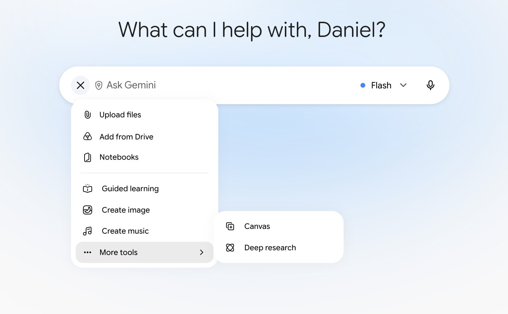
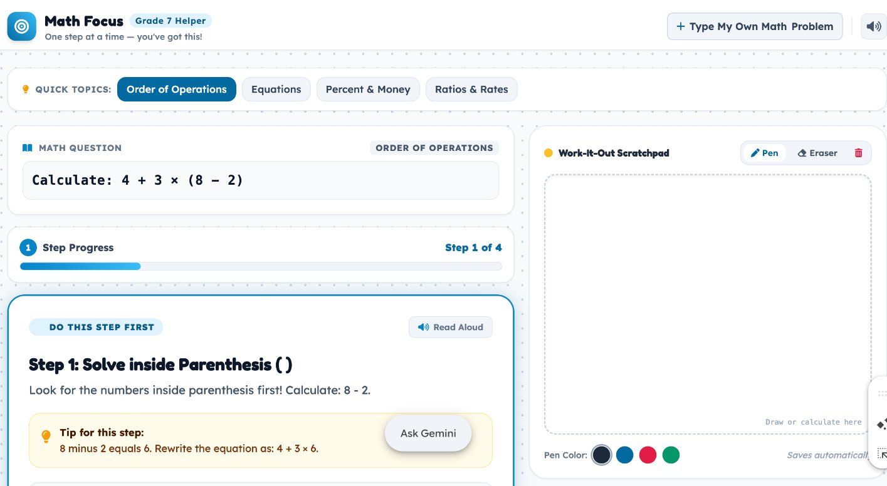
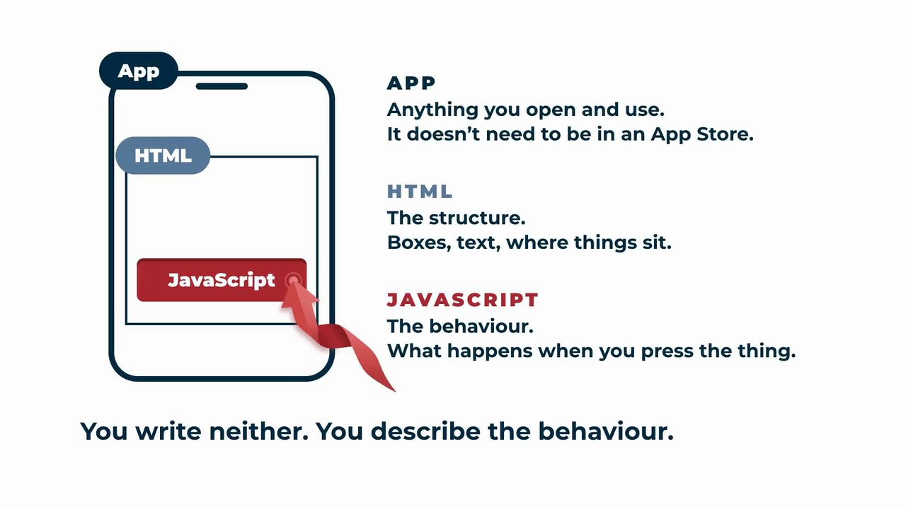

Gemini
In Round 2 you take the same barrier further. Gemini’s Canvas writes a small working web page from your prompt spine, shows it to you in a Preview, and changes it when you ask in plain words. This is vibe coding: you judge the tool by using it, not by reading its code.
Best for
Depth: prototypes you build yourself. Custom logic. Multi-step. Behaviour you design.
Start here
gemini.google.com
Sign in with your Google account. It passes you through the Microsoft sign-in.
Exercise 1: Log in and open Canvas

- Go to gemini.google.com and sign in with your Google account.
- Press + beside the Ask Gemini box.
- Choose More tools, then Canvas.
- Paste your prompt spine into the box and send it.
Exercise 2: Build from your prompt spine
Fill in the prompt spine from the session with your own barrier. Here it is filled in for one barrier, as an example.
Build a single-screen tool for a Grade 7 student who loses their place in a multi-step maths problem. Show the current step first, then let them tick it off. Keep the language at Grade 5. No sign-in.
We tested this prompt in Canvas on an HKIS account on 1 October 2026.
If Gemini says it hit an error, press Try again. When we tested this prompt, Canvas answered “I’m having a hard time fulfilling your request” the first time and “I encountered an error” the second. It built the tool on the third try.

Three words
Canvas writes real code. You never have to read it, but three words help you describe what you want.

| Word | What it means |
|---|---|
| App | Anything you open and use. It doesn’t need to be in an App Store. |
| HTML | The structure. Boxes, text, where things sit. |
| JavaScript | The behaviour. What happens when you press the thing. |
You write neither. You describe the behaviour.
Push it further
Change one thing at a time, like the SCAMPER corners. Each of these is a whole prompt; send it in the same chat, below your Canvas.
Make the buttons bigger for small hands.
Add a reset button.
Remove anything a Grade 7 student wouldn’t need.
Explain what each part does, in plain English.
Videos
Each video loads only when you press play.
A former teacher on Google’s education team builds a Moon-mission simulation in Canvas from one detailed prompt, step by step.
Builds an interest-rate simulator with sliders, improves it with follow-up prompts, and puts it on a Google Site for students. It links to Google’s free badge course.
Two minutes on the Share to Classroom button, which attaches your Canvas to a Google Classroom assignment.
Opens Canvas, prompts for a classroom game, adds scoring and sound with follow-up prompts, and shares the finished game.
A teacher builds quizzes, games and matching tasks in Canvas, shares them to Classroom, saves them to Drive, and sets up a Gem to make new activities faster.
What a Gem is (a version of Gemini with your own saved instructions), how to build one, and how to share it, with a free collection of Gems for schools.
Five minutes on Gemini for Education, using a greenhouse-effect lesson to show how to adapt explanations and build scaffolds.